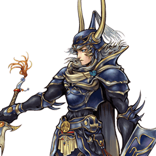
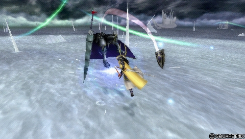
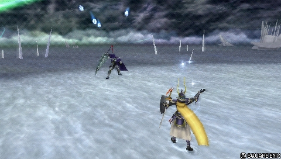
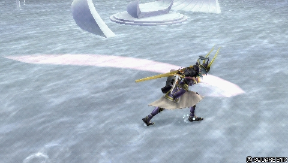

Final Fantasy
Warrior of Light
All-rounder défensif à HP links, solide sous tous les angles
Position dans la méta
Tier A 14ᵉ sur 30 — tier list tournoi 2017 de dissidia.wiki (moitié valeurs de matchups, moitié avis de joueurs experts).
Vue d'ensemble
Le Warrior of Light est un combattant de mêlée polyvalent, capable de tout faire correctement. Son style repose sur des fondamentaux classiques : pokes rapides avec Dayflash, gap closers engageants et projectiles de mi-distance. Sa mobilité standard lui permet de construire l'offense comme la défense selon le besoin, et dès qu'une ouverture se présente, ses HP links infligent de bons dégâts. Son output est soutenu par des builds à haute bravery de base, le Wall Rush HP et les combos d'assist ; il fonctionne avec de nombreux assists et ses routes de combo restent cohérentes dans la plupart des positions. Grâce à la couverture de ses HP links (Shield Strike / Rising Buckler > Bitter End), il punit efficacement sous presque tous les angles.
Ses atouts marquants sont défensifs : une DEF de base très élevée (113, parmi les meilleures), encore amplifiée en EX Mode (+10), et surtout Shield of Light, un command block avançant qui bloque dès la frame 1 et se conclut par un HP 1-hit avec Wall Rush — une propriété rare dans le jeu. Cette option sécurise ses dodges et lui permet de battre les attaques à basse priorité aux frames actives longues. En tant qu'all-rounder, il s'accommode d'une grande variété de builds, y compris EX et Side by Side.
Ses limites : il peine contre les projectiles persistants, ses disjoints étant risqués, et ses propres projectiles restent corrects mais peu rémunérateurs à distance. Sa dépendance aux HP links l'expose aux punishes après un Assist Change LV1 ; il dispose d'options plus sûres, mais au prix des dégâts. Son air dodge a un fall speed ratio moyen, ce qui l'oblige à se couvrir ponctuellement avec Shield of Light — option puissante mais très engageante, qui le laisse vulnérable en cas d'échec.
En jeu compétitif, le Warrior of Light est habituellement classé high tier : un moveset et des stats fondamentalement bons, pour un style de jeu constant et en phase avec le metagame.
Forces
- All-rounder : stats moyennes à bonnes, HP links et un moveset avec une réponse à la plupart des situations.
- Accessible : excellent pour débutants comme joueurs confirmés, idéal pour apprendre le jeu et travailler ses fondamentaux.
- Command block : Shield of Light, HP 1-hit avançant qui bloque instantanément pendant tout son startup, utile en attaque comme après un dodge.
- Combat au sol : projectiles et démarrages de combo assist via empty chase lui permettent d'adapter le rythme du match.
- Synergie de build : fonctionne avec tous les styles courants, y compris EX, bravery boost on dodge et Side by Side.
- Génération d'EX : la plupart de ses braveries produisent 30 à 90 EX Force ; Dayflash, son poke principal, en génère 90.
- EX Mode : la plus haute DEF du jeu, blocage automatique des projectiles Ranged Low et dégâts accrus sur les braveries de mêlée.
Faiblesses
- Peine contre les pièges : malgré projectiles et disjoints, il ne punit pas facilement les personnages abrités derrière des projectiles persistants sans ressources ni risque important.
- Attaques verticales engageantes : Rising Buckler et Shield Strike sont corrects mais réactables et impossibles à annuler tôt sur whiff.
- Dilemme des 4 slots de bravery : toutes ses braveries aériennes lui sont utiles, mais il ne peut pas toutes les équiper.
- Air dodge flottant, protection risquée : Shield of Light couvre bien ses dodges aériens, mais l'option est très risquée et perd contre les attaques à haute priorité ; hors clash de Dayflash, ses air dodges le laissent vulnérable.
Stats & vitesses
| Nom | Warrior of Light |
|---|---|
| Jeu d'origine | Final Fantasy |
| ATK de base (LV100) | 110 (Average) |
| DEF de base (LV100) | 113 (Very High, +10 during EX Mode) |
| Vitesse de course | 6 (Average / Good) |
| Vitesse de dash | 77 (Average / Good) |
| Vitesse de chute | 87 (Average) |
| Chute après esquive | 40 (Average) |
| BRV la plus rapide | 13F (Dayflash ground) |
| HP la plus rapide | 51F (Shining Wave) |
| HP en 1 coup | Yes (Multiple) |
| HP links | Yes |
| Command block | Shield of Light |
| Armes | Axes, Daggers, Greatswords, Katanas, Swords |
| Armures | Chestplates, Gauntlets, Heavy Armor, Helms, Large Shields, Light Armor, Shields |
| Armes exclusives | Flame Sword, Braveheart, Barbarian's Sword |
| Unlock | Default |
| Camp | Cosmos |
| Doubleur (JP) | Toshihiko Seki |
| Doubleur (ENG) | Grant George |
Point or : ce personnage · petits points : le reste du cast · trait violet : moyenne. Valeurs du wiki, plus bas = plus rapide ; le rang à droite se lit directement (1ᵉʳ = le plus rapide).
Coups
Barre plus courte = coup plus rapide. Startup en frames (60 i/s, données dissidia.wiki), priorité indiquée après la valeur. Les coups marqués ★ sont les plus rapides du kit — ce sont en général vos meilleurs outils de punish et de pression.
Braveries
Au sol
Ascension Melee Low

Combo rapproché servant aux punishes, aux combos solo au sol et à l'approche occasionnelle. Rapide (15F), anti-air, deux follow-ups au Circle puis Chase (ou Wall Rush près du plafond), et surtout le HP link Rune Saber en fin de chaîne : de bons dégâts sans assist. Recovery moyenne et aucun cancel sur whiff : un miss peut coûter son « tour ».
Normal Melee Low
| Dégâts de base | 40 (4, 5, 11, 20) |
|---|---|
| Startup | 15F |
| Type | Physical |
| Priorité | Melee Low |
| EX Force | 90 |
| Effets | Chase, Wall Rush |
| Cancels | Dodge |
| CP (maîtrisé) | 30 (15) |
EX Mode Melee Low
| Dégâts de base | 54 (4 +5, 5 +4, 11, 20 +6) |
|---|---|
| Startup | 15F |
| Type | Physical |
| Priorité | Melee Low |
| EX Force | 90 |
| Effets | Chase, Wall Rush, Block (Ranged Low) |
| Cancels | Dodge |
| CP (maîtrisé) | 30 (15) |
Sword Thrust Melee Mid (1st hit) Melee Low (others)
Gap closer engageant qui avance vers l'adversaire, principalement utilisé pour battre les blocks au sol grâce au bouclier mid priority initial. Réactable (31F), il continue d'avancer même sur whiff, ne peut pas anti-air et se fait bloquer à la réaction : à employer avec prudence contre les blocks.
Normal Melee Mid (1st hit) Melee Low (others)
| Dégâts de base | 30 (6, 3x3, 15) |
|---|---|
| Startup | 31F |
| Type | Physical |
| Priorité | Melee Mid (1st hit) Melee Low (others) |
| EX Force | 30 |
| Effets | Wall Rush |
| Cancels | Dodge |
| CP (maîtrisé) | 30 (15) |
EX Mode Melee Mid (1st hit) Melee Low (others)
| Dégâts de base | 40 (6, 3x3 +4, 15 +6) |
|---|---|
| Startup | 31F |
| Type | Physical |
| Priorité | Melee Mid (1st hit) Melee Low (others) |
| EX Force | 30 |
| Effets | Wall Rush Block (Ranged Low) |
| Cancels | Dodge |
| CP (maîtrisé) | 30 (15) |
Red Fang Ranged Low
Projectile rapide à un hit, à la plus longue portée de ses braveries (mur à mur dans Order's Sanctuary). Priorité basse, hit stun court et faible récompense : peu utilisé en compétitif, ses autres projectiles ont plus d'utilité.
| Dégâts de base | 15 |
|---|---|
| Startup | 41F |
| Type | Magical |
| Priorité | Ranged Low |
| EX Force | 0 |
| Effets | Block (Ranged Low, EX Mode) |
| Cancels | Dodge |
| CP (maîtrisé) | 30 (15) |
Blue Fang Ranged Low

Groupe de projectiles de mi-distance frappant par le haut (ou le bas). Move de niche : surtout utile dans les stages à plafond bas pour harceler les zoneurs cachés derrière leurs projectiles (Laguna sous Electro Shield, Ultimecia sous Knight's Lance chargé). Peut toucher dans le dos et ignorer le block, mais lent, à faibles dégâts et inadapté au corps à corps.
| Dégâts de base | 7 each |
|---|---|
| Startup | 41F |
| Type | Magical |
| Priorité | Ranged Low |
| EX Force | 0 |
| Effets | Block (Ranged Low, EX Mode) |
| Cancels | Dodge |
| CP (maîtrisé) | 30 (15) |
White Fang Ranged Low
Son projectile de référence au sol pour la pression et les combos. Il reste actionnable pendant que les éclairs avancent, ce qui couvre son approche, et le hit stun correct permet d'enchaîner sur Ascension, Dayflash et plus. Actif environ 1,7 s seulement, homing lent sur les angles verticaux prononcés : attention aux dashes qui passent au travers.
| Dégâts de base | 6 each |
|---|---|
| Startup | 47F |
| Type | Magical |
| Priorité | Ranged Low |
| EX Force | 0 |
| Effets | Block (Ranged Low, EX Mode) |
| Cancels | Dodge |
| CP (maîtrisé) | 30 (15) |
Dayflash (Ground) Melee Low

Son poke principal : rapide (13F), 90 EX, démarreur de combo assist. Se whiff sans danger pour charger la jauge d'assist grâce à sa recovery courte et ses nombreux cancels (dodge, block, autre attaque). Sur hit, deux follow-ups au Circle avec une fenêtre longue idéale pour hit confirm, puis Chase ; l'empty chase retardé force un Wall Rush au sol et relance les combos d'assist. Un pilier de son jeu compétitif.
Normal Melee Low
| Dégâts de base | 22 (3, 4, 15) |
|---|---|
| Startup | 13F |
| Type | Physical |
| Priorité | Melee Low |
| EX Force | 90 |
| Effets | Chase |
| Cancels | A missed attack that doesn't make any contact. ) |
| CP (maîtrisé) | 30 (15) |
EX Mode Melee Low
| Dégâts de base | 36 (3 +4, 4 +4, 15 +6) |
|---|---|
| Startup | 13F |
| Type | Physical |
| Priorité | Melee Low |
| EX Force | 90 |
| Effets | Chase Block (Ranged Low) |
| Cancels | Dodge, Block & Attack (Whiff ) |
| CP (maîtrisé) | 30 (15) |
En l’air
Crossover Melee Low
Bravery avançante avec HP link, alternative aérienne à Ascension : outil de punish contre les attaques longues et les adversaires staggered, approche possible avec parcimonie. Le follow-up au Circle cause Chase ou Wall Rush près du plafond. Doit être complété pour lancer Rune Saber ; startup limite réactable (23F) et environ une seconde avant de pouvoir dodge cancel : dangereux à whiff en neutral. Le dernier hit peut rater au plafond contre les grands gabarits (Garland, Golbez, Exdeath).
Normal Melee Low
| Dégâts de base | 40 (5, 5, 10, 20) |
|---|---|
| Startup | 23F |
| Type | Physical |
| Priorité | Melee Low |
| EX Force | 90 |
| Effets | Chase, Wall Rush |
| Cancels | Dodge |
| CP (maîtrisé) | 30 (15) |
EX Mode Melee Low
| Dégâts de base | 50 (5, 5, 10 +4, 20 +6) |
|---|---|
| Startup | 23F |
| Type | Physical |
| Priorité | Melee Low |
| EX Force | 90 |
| Effets | Chase, Wall Rush Block (Ranged Low) |
| Cancels | Dodge |
| CP (maîtrisé) | 30 (15) |
Rising Buckler Melee Low
Punish anti-air contre les adversaires au-dessus de lui, récompensé par le HP link Bitter End. Bouclier disjoint capable de percer les projectiles, side switch possible sur hit, follow-up fiable des assists bravery aériens de Kuja et Sephiroth. Réactable (25F) avec un cue audio distinct, sans tracking une fois lancé ; utile dans certains matchups aériens comme Sephiroth et Kuja.
Normal Melee Low
| Dégâts de base | 30 (2x4, 6, 16) |
|---|---|
| Startup | 25F |
| Type | Physical |
| Priorité | Melee Low |
| EX Force | 30 |
| Effets | Wall Rush |
| Cancels | Dodge |
| CP (maîtrisé) | 30 (15) |
EX Mode Melee Low
| Dégâts de base | 42 (2x4 +6, 6, 16 +6) |
|---|---|
| Startup | 25F |
| Type | Physical |
| Priorité | Melee Low |
| EX Force | 30 |
| Effets | Wall Rush Block (Ranged Low) |
| Cancels | Dodge |
| CP (maîtrisé) | 30 (15) |
Shield Strike Melee Low
Quasi identique à Rising Buckler mais vers le bas : son move air-to-ground principal, qui punit le jeu imprudent d'en dessous et frappe les adversaires staggered après un Assist Change LV2. HP link Bitter End également. Mêmes défauts : réactable, télégraphé, longue recovery et aucun tracking après le lancer ; le bouclier touche aussi devant lui, ce qui permet le combo HP après l'assist Sephiroth.
Normal Melee Low
| Dégâts de base | 30 (2x4, 6, 16) |
|---|---|
| Startup | 25F |
| Type | Physical |
| Priorité | Melee Low |
| EX Force | 30 |
| Effets | Wall Rush |
| Cancels | Dodge |
| CP (maîtrisé) | 30 (15) |
EX Mode Melee Low
| Dégâts de base | 42 (2x4 +6, 6, 16 +6) |
|---|---|
| Startup | 25F |
| Type | Physical |
| Priorité | Melee Low |
| EX Force | 30 |
| Effets | Wall Rush Block (Ranged Low) |
| Cancels | Dodge |
| CP (maîtrisé) | 30 (15) |
Dayflash (midair) Melee Low
Version aérienne essentielle et similaire à la version sol : rapide (15F, toujours non réactable), sûre à whiff pour la jauge d'assist, fiable pour confirmer les combos d'assist et accumuler de l'EX. La hitbox descend assez bas pour toucher un adversaire au sol. Ses dégâts sont les plus faibles de son arsenal, mais sa longévité dépend de la maîtrise de ce move.
Normal Melee Low
| Dégâts de base | 22 (3, 4, 15) |
|---|---|
| Startup | 15F |
| Type | Physical |
| Priorité | Melee Low |
| EX Force | 90 |
| Effets | Chase |
| Cancels | A missed attack that doesn't make any contact. ) |
| CP (maîtrisé) | 30 (15) |
EX Mode Melee Low
| Dégâts de base | 36 (3 +4, 4 +4, 15 +6) |
|---|---|
| Startup | 15F |
| Type | Physical |
| Priorité | Melee Low |
| EX Force | 90 |
| Effets | Chase Block (Ranged Low) |
| Cancels | Dodge, Block & Attack (Whiff ) |
| CP (maîtrisé) | 30 (15) |
Attaques HP
Au sol
Shield of Light (ground) Melee High, Block Mid
Son command block signature : il avance puis libère un blast 1-hit qui Wall Rush, en bloquant instantanément de la frame 1 jusqu'au coup. Punit les pokes à basse priorité et sert d'option défensive immédiate après un dodge au sol. Ne bloque que les priorités basses : les HP et les moves supérieurs le guard crush ou le stagger, et un miss le laisse grand ouvert. Il devient aérien à l'usage et vise automatiquement en diagonale un adversaire en l'air, sans pouvoir corriger la direction en cours.
| Startup | 53F (Block from 1F to 53F) |
|---|---|
| Priorité | Melee High, Block Mid |
| EX Force | 0 |
| Effets | Block, Wall Rush |
| Cancels | Dodge |
| CP (maîtrisé) | 30 (15) |
Shining Wave Melee High (blade) Ranged High (light pillar)
HP de longue portée en vague : contre-attaque après block stagger et outil de contrôle d'espace passif. Solide anti-air (hitboxes verticales hautes instantanées, rotation complète), faisceaux non réfléchissables qui subsistent même bloqués, et priorité Ranged High qui ignore les staggers d'Assist Change LV2 en combo. À utiliser avec parcimonie : vulnérable après le tir, perd contre les mêlées haute priorité et les command blocks de Jecht et Exdeath. Peut rater contre un déplacement très rapide traversant le projectile.
| Startup | 51F |
|---|---|
| Priorité | Melee High (blade) Ranged High (light pillar) |
| EX Force | each 60 |
| Cancels | Dodge |
| CP (maîtrisé) | 30 (15) |
Ultimate Shield Melee High
Son HP au sol le plus rapide (41F), pour puni les blocks, dodges proches voire attaques, avec un fort tracking hémisphérique. Il reste sur place pendant que le bouclier part ; sans contact, pas de suite de combo, ce qui le rend un peu plus sûr à distance. Réfléchit les projectiles HP sans avancer. Un hit glitch avec White Fang peut déclencher les follow-ups sans contact, ce qui peut être pénalisant ; longue recovery, gare aux Assist Changes.
| Dégâts de base | 20 (4 x 3, 8) |
|---|---|
| Startup | 41F |
| Type | Physical |
| Priorité | Melee High |
| EX Force | 30 |
| Effets | Wall Rush |
| Cancels | Dodge |
| CP (maîtrisé) | 30 (15) |
En l’air
Shield of Light (midair) Melee High, Block Mid
La version aérienne, la plus utilisée, du command block signature : auto-défense après air dodge et call-out des moves Melee Low ou mid lents — un argument clé face aux autres all-rounders comme Cloud et Squall. En 1-hit, il déjoue aussi les checkmates EX Revenge avec l'EX depletion. Portée courte et tracking vertical limité, mais Wall Rush possible sur bonne lecture et setups de double assist avec Aerith. Indispensable.
| Startup | 53F (Block from 1F to 53F) |
|---|---|
| Priorité | Melee High, Block Mid |
| EX Force | 0 |
| Effets | Block, Wall Rush |
| Cancels | Dodge |
| CP (maîtrisé) | 30 (15) |
Radiant Sword Ranged High
Projectiles à tête chercheuse de longue portée pour harceler à distance ou contester les EX Cores. Taux de contact faible : animation télégraphée, accélération progressive qui regroupe les projectiles en ligne facile à esquiver. Sur hit, Wall Rush et départ de combo assist, avec un net frame advantage après dodge cancel — mais les setups sont limités. Prudence.
| Startup | 77F |
|---|---|
| Priorité | Ranged High |
| EX Force | 0 |
| Effets | Wall Rush |
| Cancels | Dodge |
| CP (maîtrisé) | 30 (15) |
HP links (Bravery → HP)
Attaques HP qui se déclenchent en prolongement d'une bravery précise — le « HP link ». Elles s'équipent comme les autres attaques HP.
Rune Saber (ground) Melee High (?)
HP link d'Ascension, remarquable pour son potentiel de combo et sa relative sécurité face aux Assist Changes. Knockback vertical long : Wall Rush constant dans les stages à plafond bas (Sky Fortress Bahamut, Edge of Madness), et les assists multi-hits comme Sephiroth permettent le knockback cancel ailleurs. Le dernier hit, haut et longuement actif, couvre partiellement la fin d'animation, sans être totalement sûr.
| Dégâts de base | 10 (2 x 3, 4) / +Ascension = (50 Total) |
|---|---|
| Startup | ? |
| Type | Magical |
| Priorité | Melee High (?) |
| EX Force | 0 |
| Effets | Wall Rush |
| Cancels | Dodge |
| CP (maîtrisé) | 30 (15) |
Rune Saber (midair) Melee High (?)
HP link de Crossover, toujours recommandé, fonctionnellement identique à la version sol. Attention aux Wall Rush au plafond : Crossover étant aérien, il peut Wall Rush avant que Rune Saber ne connecte.
| Dégâts de base | 10 (2 x 3, 4) / +Crossover = (50 Tota) |
|---|---|
| Startup | ?? |
| Type | Magical |
| Priorité | Melee High (?) |
| EX Force | 0 |
| Effets | Wall Rush |
| Cancels | Dodge |
| CP (maîtrisé) | 30 (15) |
Bitter End A Melee High (?)
HP link de Rising Buckler, pilier de son jeu : récompense les whiff punishes en dégâts HP sans assist. Dégâts totaux un peu inférieurs à Rune Saber mais sans souci de plafond ; Wall Rush fiable pour démarrer les combos d'assist et longue animation propice aux knockback cancels avec Sephiroth — et à récupérer sa bravery de base avec les builds à haute BRV. Très risqué contre un adversaire sorti en Assist Change LV1 : aucune annulation avant le dernier hit, immobile et peu protégé verticalement.
| Dégâts de base | 15 (2 x 6, 3) / +Rising Buckler = (29 Total) |
|---|---|
| Startup | ?? |
| Type | Physical |
| Priorité | Melee High (?) |
| EX Force | 0 |
| Effets | Wall Rush |
| Cancels | Dodge |
| CP (maîtrisé) | 30 (15) |
Bitter End B Melee High (?)
Identique à Bitter End A, mais en branche de Shield Strike.
| Dégâts de base | 15 (2 x 6, 3) / +Shield Strike = (29 Total) |
|---|---|
| Startup | ?? |
| Type | Physical |
| Priorité | Melee High (?) |
| EX Force | 0 |
| Effets | Wall Rush |
| Cancels | Dodge |
| CP (maîtrisé) | 30 (15) |
EX Mode: Class Change! & EX Burst
EX Mode « Class Change! » — effets : Regen, Critical Boost, Mirror Attack, Protect et Light's Blessing. Warrior of Light y gagne des hits supplémentaires sur ses braveries de mêlée (Light's Blessing, épées de lumière à 1 de dégât de base chacune, qui causent du hit stun sans ouvrir de nouvelles routes de combo solo), une grosse réduction de dégâts via +10 DEF de base (Protect) et le blocage des attaques Ranged Low pendant ses propres animations d'attaque, recovery comprise (Mirror Attack).
Comme les EX Modes servent surtout à sécuriser une victoire via combo d'assist, les bonus défensifs jouent rarement à plein — les assists interrompent souvent l'EX Mode et l'adversaire peut fuir pour gagner du temps si Warrior of Light ne le verrouille pas dans un combo. Cela reste un EX Mode compétent dans l'ensemble.
EX Burst : Oversoul est un EX Burst assez standard : six entrées directionnelles correctes à saisir (stick analogique refusé), des follow-ups quasi immédiats qui laissent peu de temps à l'adversaire pour monter sa DEF, et quelle que soit la réussite, une frappe finale à 25 de dégâts de base.
Plan de jeu & techniques avancées
La boucle de jeu s'articule autour de Dayflash : whiffer le poke sans risque pour remplir la jauge d'assist, générer 90 EX par touche et confirmer visuellement les hits pour partir en combo d'assist. Au sol, White Fang couvre l'approche et enchaîne sur Ascension (le combo White Fang > Ascension > Rune Saber est sa route solo de référence, 56 minimum plus HP et Wall Rush) ou sur Dayflash avec empty chase retardé pour forcer un Wall Rush au sol, ramasser tout l'EX du stage et relancer un assist.
Les dégâts HP passent par trois canaux : les HP links (Ascension/Crossover > Rune Saber, Rising Buckler/Shield Strike > Bitter End) qui punissent sans assist sous presque tous les angles ; les combos d'assist démarrés sur Dayflash ou un Wall Rush (le combo type midscreen : Dayflash 2 hits > assist BRV > Assist Chase > Shield Strike > Bitter End) ; et Shield of Light en lecture défensive, qui convertit un block en Wall Rush.
Défensivement, jouez sur la double couche : dodge puis Shield of Light instantané contre les dashes et attaques à basse priorité — l'adversaire risque des dégâts HP rien qu'en approchant. Réservez toutefois cette option, très engageante, aux moments nécessaires, car elle perd contre les priorités hautes et laisse grand ouvert sur miss.
Côté ressources, la génération d'EX de Dayflash soutient la survie à long terme via la jauge EX, et les builds à haute bravery de base maximisent le retour de bravery pendant les longues animations de Bitter End en fin de combo d'assist. Attention enfin à la dépendance aux HP links : après un Assist Change LV1 adverse, Bitter End et Rune Saber deviennent punissables — privilégiez alors les options sûres au détriment des dégâts.
Techniques spécifiques
Dayflash empty chase reset
Retarder au maximum le Chase de Dayflash, puis le déclencher juste avant que l'adversaire touche le sol pour forcer une réaction Wall Rush. Permet de chasser sans se faire contrer, de récupérer tout l'EX du stage et de réinitialiser l'usage d'assist pour prolonger un combo si une autre barre est en stock. Le relevé communautaire des empty chases confirme Dayflash (au sol) parmi les rares coups du cast offrant ce reset.
Sources : pastebin.com/dKSWgUQ6
Bitter End knockback cancel
Presser l'assist (Sephiroth) au moment exact où le dernier coup de bravery de Bitter End connecte : l'assist frappe pendant la fin d'animation et maintient l'adversaire en place, ouvrant un second Shield Strike > Bitter End n'importe où sur le stage, sans mur.
Ultimate Shield hit glitch
Si White Fang connecte au moment où Ultimate Shield est lancé, le move enchaîne ses follow-ups sans contact réel avec l'adversaire. Vu la portée courte du move, ce glitch est plutôt un piège à connaître qu'un outil.
Double assist Aerith
Après un Wall Rush, Shield of Light peut poser le setup d'un second assist Aerith dans le même combo ; avec une bravery de base élevée, le double assist inflige de très gros dégâts.
Routes de combo solo recensées
White Fang et Blue Fang enchaînent sur toute attaque de mêlée sauf Shield of Light ; EX Crossover (sans le dernier hit) > dodge cancel > EX Dayflash aérien ; l'auteur mentionne aussi EX Dayflash au sol (2 coups sur adversaire aérien) > DC > landing lag > EX Crossover, en le marquant lui-même comme non confirmé.
Sources : pastebin.com/8FWDXjvJ
Combos documentés (notation d'origine, dissidia.wiki)
(Main article pending)
Warrior of Light can create assist combos with Wall Rush, Dayflash and even during his Bitter End and Rune Saber HP links |
An HP attack that branches from a bravery attack. e.g. Cloud's Slashing Blow into Omnislash Version 5.
. This gives him flexibility in setting up HP damage. When following up after Sephiroth, delay Assist Chase a little so that Shield Strike connects more consistently.
Techniques universelles (blodge, dash feint, lock off, dodge punishment) : voir la page Techniques & glitches.
Matchups
La page matchups du wiki est un stub : aucun tableau détaillé n'est documenté. Les sources livrent toutefois quelques repères : Rising Buckler prend de la valeur dans les matchups orientés air comme Sephiroth et Kuja ; Blue Fang sert à déloger les personnages retranchés derrière leurs projectiles, tels Laguna sous Electro Shield ou Ultimecia sous Knight's Lance chargé ; et de manière générale, les personnages à projectiles persistants restent sa difficulté principale. Notez aussi que le dernier hit de Crossover peut rater au plafond contre les grands gabarits (Garland, Golbez, Exdeath).
Vidéos de matchs : Replay Theater — matchs de Warrior of Light.
Builds
Warrior of Light fonctionne avec une grande variété de builds : hybrides équilibrés, Bravery Boost on Dodge, Side by Side. Comme l'essentiel de ses dégâts vient des combos d'assist sur Dayflash et de ses HP links, il est rarement construit pour les dégâts de bravery ; en revanche, une bravery de base élevée profite énormément à ses combos d'assist.
Le build hybride documenté vise l'EX intake et l'EX depletion — un bon point de départ, la plupart des builds compétitifs jouant sur les dégâts, l'EX et/ou la depletion de jauges. Il repose sur le set Seal of Lufenia (avec Equip Glitch, 450 CP au total) : la baisse de DEF du set est compensée par sa DEF de base très élevée, Lufenian Dirk apporte +1 ATK pour contrebalancer la faible ATK de Heaven's Cloud, dont la portée d'absorption d'EX accrue facilite la collecte d'EX Force. Assist : Sephiroth ; summon : Rubicante.
Hybrid
| Stats | |
|---|---|
| HP | 11299 |
| CP | 450 |
| BRV | 996 |
| ATK | 178 |
| DEF | 184 |
| LUK | 60 |
| Equipment | |
|---|---|
| Assist | Sephiroth |
| Weapon | Heaven's Cloud |
| Hand | Lufenian Dirk |
| Head | Lufenian Headband |
| Body | Lufenian Vest |
| Accessory 1 | Muscle Belt |
| Accessory 2 | Dismay Shock |
| Accessory 3 | Battle Hammer |
| Accessory 4 | Summon Unused |
| Accessory 5 | Pre-EX Mode |
| Accessory 6 | Pre-EX Revenge |
| Accessory 7 | Opponent Summon Unused |
| Accessory 8 | White Gem |
| Accessory 9 | Tenacious Attacker |
| Accessory 10 | Glutton |
| Summon | Rubicante |
| Au sol | En l’air |
|---|---|
| Dayflash | Dayflash |
| ↑+ Ascension | ↑+ Crossover |
| Branch: Rune Saber | Branch: Rune Saber |
| ↓+ White Fang | ↓+ Shield Strike |
| Branch: Bitter End |
| Au sol | En l’air |
|---|---|
| Shield of Light | Shield of Light |
| ↓+ Shining Wave | ↓+ Radiant Sword |
Le coût CP total du build documenté suppose l'usage de l'Equip Glitch. Stats du build : 11299 HP, 996 BRV, 178 ATK, 184 DEF, 60 LUK.
Synergies d'assist
Warrior of Light en tant qu'assist
En tant qu'assist, Warrior of Light est l'un des plus faibles du jeu (tier Low de la tier list assist). Ses braveries ne retiennent pas l'adversaire longtemps et le repoussent vite du joueur ; sans Assist Chase, il peine à poser les HP du personnage joueur et dépend du Wall Rush. Il est conseillé de combattre près du sol pour que Rising Buckler plaque au moins l'adversaire au plancher.
Rising Buckler garde une niche : la meilleure combinaison de portée verticale et de vitesse parmi les assists bravery aériens, ce qui permet des combos depuis certains moves de chase (Pummel de Laguna, finisher rapproché de Strike Energy de Kuja) — même si l'assist air BRV de Zidane lui est généralement préféré dans ce rôle. Shield of Light peut bloquer des attaques, notable en scramble et en situation de checkmate, mais en tant qu'attaque HP il reste cher et risqué.
Assists recommandées
- Sephiroth — La synergie la plus populaire en compétitif : combo depuis presque tous ses moves, Wall Rush constant, et ses multi-hits facilitent les knockback cancels n'importe où. Son angle de knockback plus bas rend Crossover > Rune Saber plus constant et plus dommageable en follow-up.
- Aerith — Moins de dégâts de bravery et de whiff punish, mais des combos plus sûrs et de l'EX intake. Les setups de chase Dayflash brillent ici (EX, contournement des staggers d'Assist Change LV2), et Shield of Light après Wall Rush permet un double assist très dommageable avec une haute bravery de base.
- Jecht — Frappe plus vite que Sephiroth ; son air BRV ouvre des combos au sol prolongés pour beaucoup de bravery, avec relance possible via le reset empty chase de Dayflash (ground). Synergie compétente, au prix des knockback cancels midscreen constants.
Tech communautaire
Shining Wave peut rater contre un déplacement rapide
Démonstration vidéo : la hitbox de la vague de Shining Wave peut manquer un adversaire traversant le projectile à grande vitesse. Tentative risquée côté adverse, donc rarement un problème en pratique.
Dissidia 012 Duodecim Final Fantasy: Warrior of Light White Fang Combo Video 2011
Combo video d'époque par Kibafool consacrée aux conversions de White Fang, le projectile de référence du Warrior of Light au sol.
Need Warrior of Light tips. (thread GameFAQs) 2012
Thread d'époque du board Duodecim : link glitches de White Fang (avec Ascension, Sword Thrust, Rising Buckler jusqu'à Bitter End, Crossover), comparatif Ultimate Shield / Shield of Light et conseils de moves à équiper par des mainers.
https://gamefaqs.gamespot.com/boards/605802-dissidia-012-duodecim-final-fantasy/61779862
Liste de combos solo de tout le cast (Eddiegames) 2022
Relevé communautaire des routes de combo solo des 31 personnages, rédigé par Eddiegames sur le Discord DISSIDIA et publié en pastebin (dernière mise à jour décembre 2022). Le relevé retient ses links depuis White Fang et Blue Fang, et deux routes EX.
Liste des empty chases menant à un reset de jauge d'assist (Eddiegames)
Relevé personnage par personnage des coups dont le hit stun permet un empty chase (un chase initié sans rien y exécuter) suivi d'un reset de la jauge d'assist adverse. Le détail pour ce personnage est repris dans les techniques spécifiques.
Sources
- https://dissidia.wiki/Warrior_of_Light_(Dissidia_012)
- https://www.youtube.com/watch?v=cDI-tsnyJbM&t=25
- https://www.youtube.com/watch?v=-0_YKBQcxOA
- https://gamefaqs.gamespot.com/boards/605802-dissidia-012-duodecim-final-fantasy/61779862
- https://pastebin.com/8FWDXjvJ
- https://pastebin.com/dKSWgUQ6
- https://dissidia.wiki/Tier_List_(Dissidia_012)
- https://dissidia.wiki/Tier_List_(Assist)
Limites connues
- Page matchups du wiki à l'état de stub : aucun matchup détaillé n'est documenté.
- Aucune mécanique unique documentée (section absente des sources).
- Section combos solo marquée « Main article pending » : seuls deux combos solo et trois combos assist (Sephiroth) sont détaillés.
- Valeurs d'assist gain des coups non renseignées dans les données.
- Startup exact des HP links (Rune Saber, Bitter End) inconnu (« ? » dans les tables), tout comme certains décomptes d'EX Force et de Comrade's Vow des combos (« ??? »).
- Un seul build documenté (hybride Seal of Lufenia) ; pas de variantes détaillées (l'article builds dédié n'est pas inclus dans les données).
- Le relevé d'empty chases de la communauté n'est pas daté (le relevé de combos solo qui l'accompagne l'est de décembre 2022) : son état de fraîcheur ne peut pas être établi.